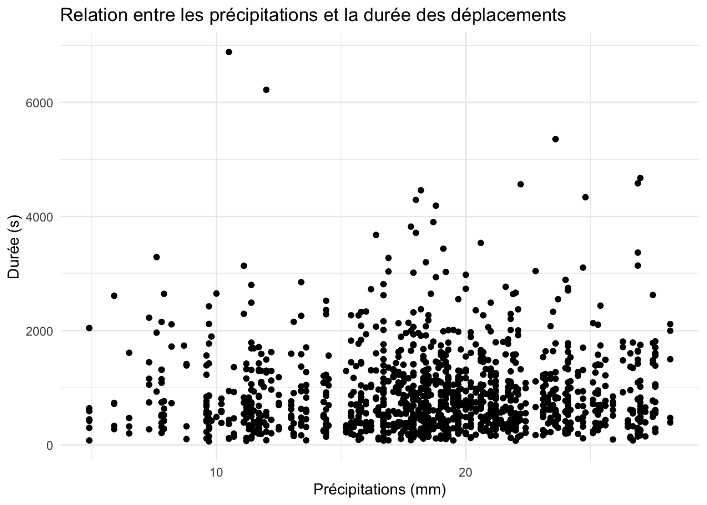

library(tidyverse)library(gridExtra)# On charge les donnéesdata_filename <-"MATH60604-projet-bixi_partie1_equipe1.csv"raw_data <-read.csv(data_filename)# On convertit les colonnes aux types appropriésdata <- raw_data %>%mutate(date =ymd_hms(dep),jour =as.factor(jour),mem =as.logical(mem),pointe =as.factor(pointe) ) %>%select(-c(dep))# On ajoute des colonnes utiles à l'analysedata <- data %>%mutate(hour =format(date, format ="%H:%M"),day =format(date, format ="%Y-%m-%d") )
Analyse exploratoire
dur mem jour temp
Min. : 61.0 Mode :logical dimanche:180 Min. : 4.90
1st Qu.: 394.8 FALSE:630 jeudi :180 1st Qu.:15.80
Median : 707.0 TRUE :630 lundi :180 Median :18.80
Mean : 907.4 mardi :180 Mean :18.61
3rd Qu.:1178.2 mercredi:180 3rd Qu.:21.90
Max. :6884.0 samedi :180 Max. :28.20
vendredi:180
prec pointe date hour
Min. : 0.000 1:420 Min. :2021-05-01 07:19:48.00 Length:1260
1st Qu.: 0.000 2:420 1st Qu.:2021-06-15 18:42:34.00 Class :character
Median : 0.000 3:420 Median :2021-07-31 22:31:05.00 Mode :character
Mean : 1.359 Mean :2021-07-31 21:36:53.00
3rd Qu.: 0.300 3rd Qu.:2021-09-17 10:35:07.25
Max. :31.700 Max. :2021-10-30 18:39:50.00
day
Length:1260
Class :character
Mode :character
[1] "Combien de déplacements par jour de la semaine?"
QUESTION 1.1 : En moyenne, les membres de BIXI effectuent-ils des trajets plus courts que les non-membres?
Code
# On crée un graphique pour visualiser la distribution des distances# ggplot(data, aes(x = dur, fill = mem)) +# geom_histogram(bins = 30) +# labs(# title = "Distribution des distances des déplacements",# x = "Durée (s)", y = "Nombre de déplacements"# ) +# theme_minimal()model <-lm(dur ~ mem, data = data)summary(model)
Call:
lm(formula = dur ~ mem, data = data)
Residuals:
Min 1Q Median 3Q Max
-943.1 -495.9 -190.4 270.6 5863.9
Coefficients:
Estimate Std. Error t value Pr(>|t|)
(Intercept) 1020.10 29.26 34.865 < 2e-16 ***
memTRUE -225.30 41.38 -5.445 6.23e-08 ***
---
Signif. codes: 0 '***' 0.001 '**' 0.01 '*' 0.05 '.' 0.1 ' ' 1
Residual standard error: 734.4 on 1258 degrees of freedom
Multiple R-squared: 0.02302, Adjusted R-squared: 0.02225
F-statistic: 29.65 on 1 and 1258 DF, p-value: 6.226e-08
# --- QUESTION 1.2 : Les résultats sont-ils les mêmes si l’on tient compte de l’utilisation en fin de semaine ou en semaine? ---# On crée un graphique pour visualiser la distribution des distancesweek_ends <- data %>%filter(jour %in%c("samedi", "dimanche"))week_days <- data %>%filter(jour %in%c("lundi", "mardi", "mercredi", "jeudi", "vendredi"))plot1 <-ggplot(week_ends, aes(x = dur, fill = mem)) +geom_histogram(bins =30) +labs(title ="Distribution des distances des déplacements en fin de semaine",x ="Durée (s)", y ="Nombre de déplacements" ) +theme_minimal()plot2 <-ggplot(week_days, aes(x = dur, fill = mem)) +geom_histogram(bins =30) +labs(title ="Distribution des distances des déplacements en semaine",x ="Durée (s)", y ="Nombre de déplacements" ) +theme_minimal()grid.arrange(plot1, plot2, ncol =1)
Code
# --- QUESTION 2.1 : Est-ce que la durée des trajets est influencée par la météo? ---# On crée un nuage de points pour visualiser la relation entre les précipitations et la durée des déplacementsggplot(data, aes(x = temp, y = dur)) +geom_point() +labs(title ="Relation entre les précipitations et la durée des déplacements",x ="Précipitations (mm)", y ="Durée (s)" ) +theme_minimal()

Code
# --- QUESTION 2.2 : Au vu du résultat que vous obtenez,est-ce que vos modèles initiaux devraient être revisités? ---# --- QUESTION 3.1 : Les durées de trajets sont-elles différentes selon que l’on se trouve aux heures de pointe ou non en semaine? ---# --- QUESTION 3.2 : Existe-t-il des différences entre l’utilisation pour les heures de pointes en semaine le matin ou le soir? ---